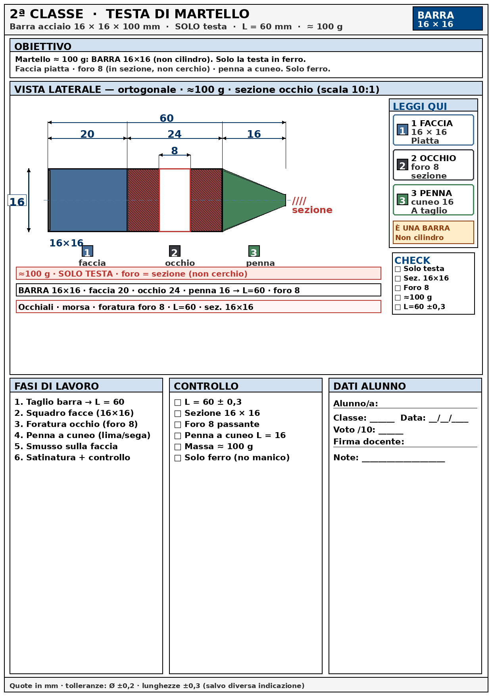
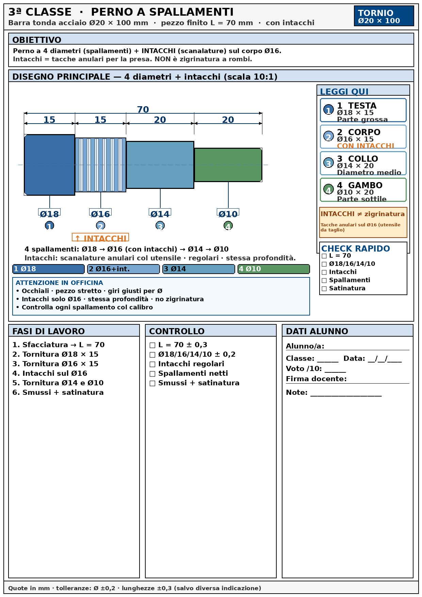
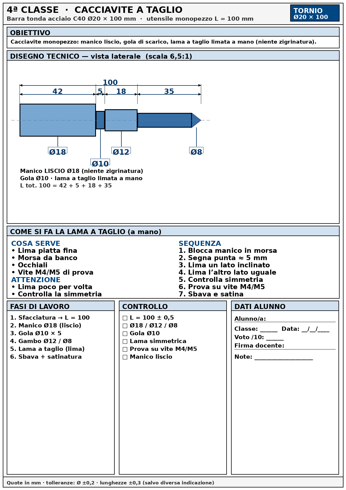
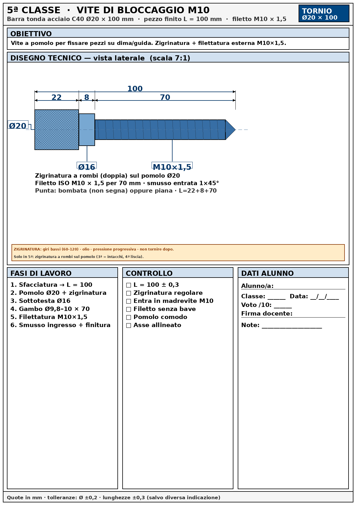
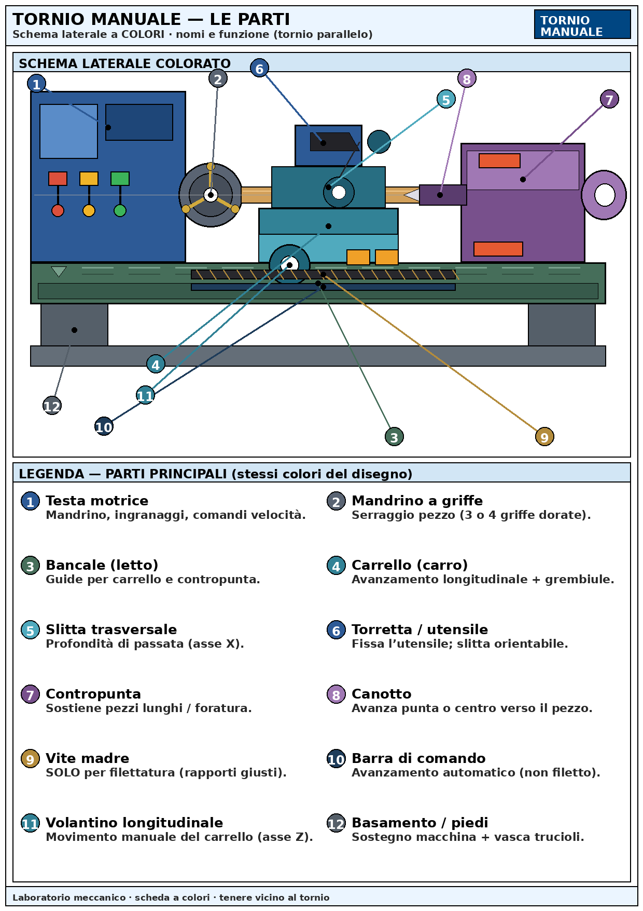
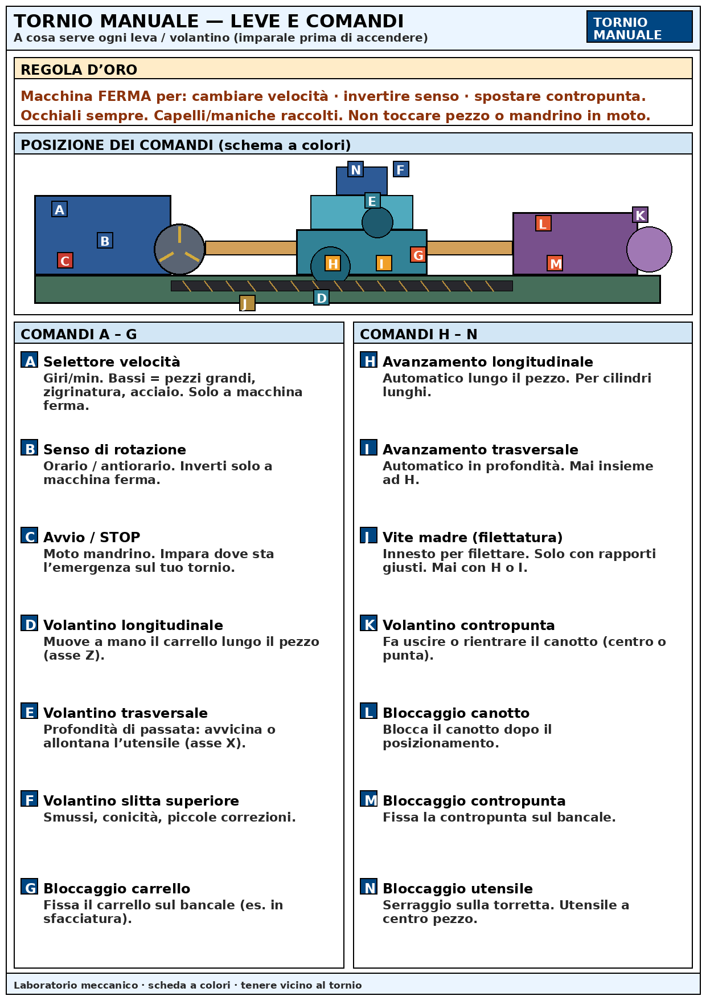

2ª Testa di martello (ferro)

Scarica 01-2a-testa-martello.pngTieni premuto sull’immagine o usa Scarica
2ª testa martello · 3ª perno con intacchi · 4ª cacciavite · 5ª vite M10 · tornio · filettatura.

Scarica 01-2a-testa-martello.png
Scarica 02-3a-perno-spallamenti.png
Scarica 03-4a-cacciavite.png
Scarica 04-5a-vite-M10.png
Scarica 05-tornio-parti.png
Scarica 06-tornio-leve.png Scarica 07-tornio-sicurezza.png
Scarica 07-tornio-sicurezza.png
 Scarica 14-come-si-fa-filettatura.png
Scarica 14-come-si-fa-filettatura.png